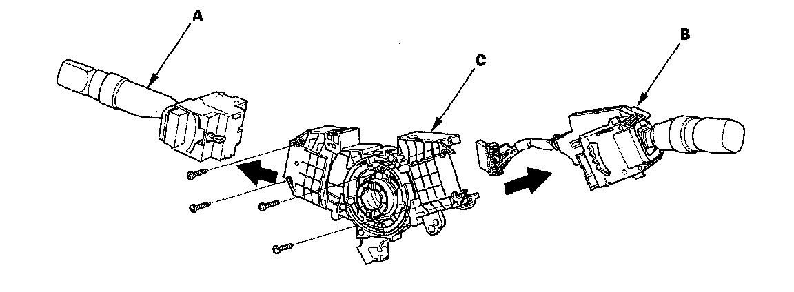

Steering Angle Sensor: Service and Repair
Steering Angle Sensor ReplacementNOTE: Do not damage or drop the combination switch as the steering angle sensor is sensitive to shock and vibration.
1. Remove the steering wheel.
2. Remove the steering column covers and the cable reel.
3. Remove the combination switch assembly.
4. Remove the combination light switch (A) and the wiper/washer switch (B).

5. Replace the combination switch body assembly (C).
6. Install the combination switch in the reverse order of removal.
NOTE:
^ Do not remove the steering angle sensor from the combination switch body.
^ When installing the cable reel, set the turn signal canceling sleeve position.